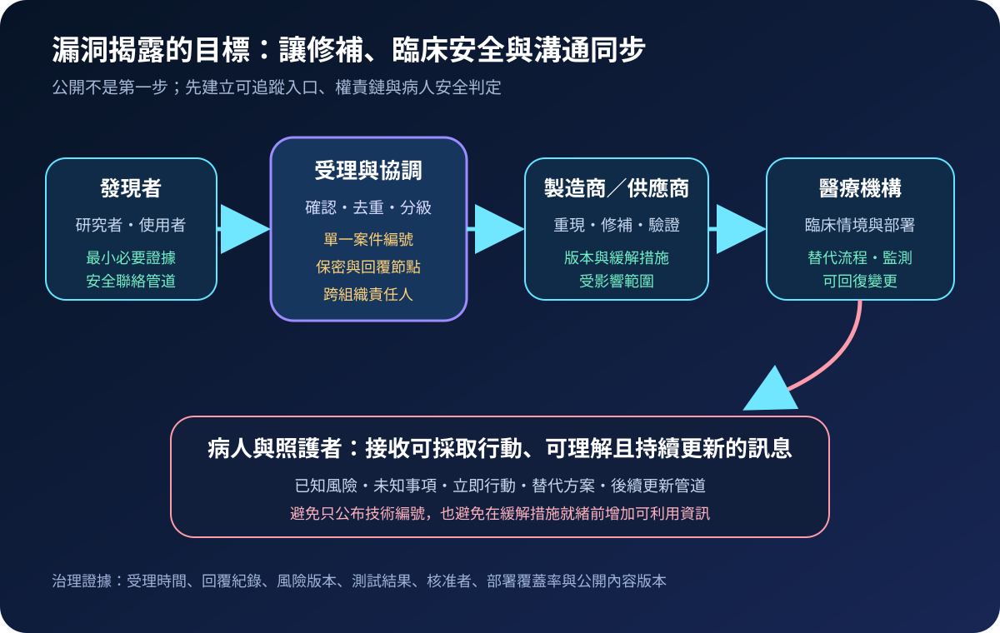
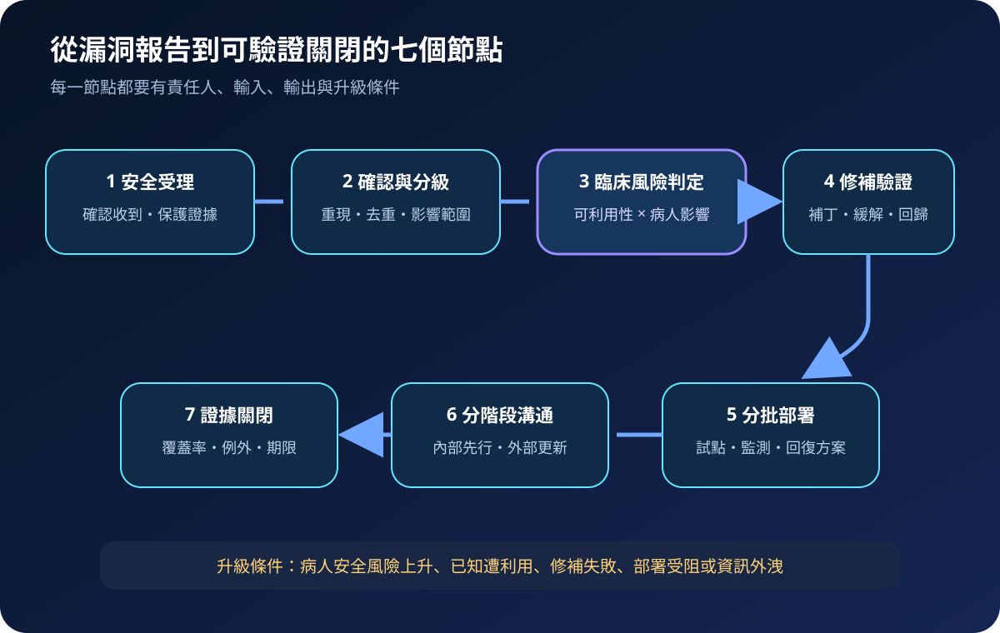
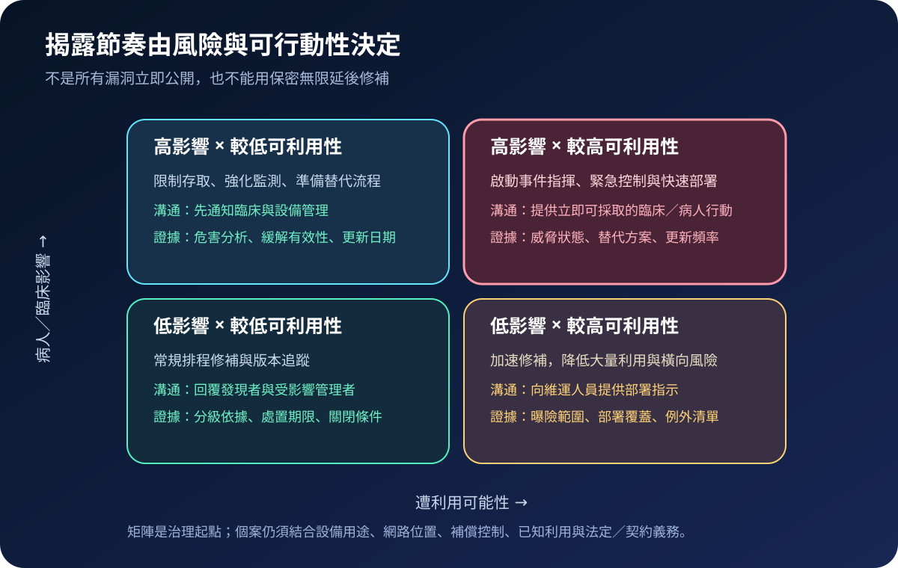

醫療資安國際觀察 · 2026-08-29
醫療漏洞揭露如何兼顧修補與病人安全：從單一入口到分階段溝通
作者：Dr. William｜醫療資訊與資安治理實務工作者
醫療漏洞揭露不是把 CVE 編號貼上公告。治理重點是讓發現者有安全入口，讓製造商與醫療機構同步完成技術及臨床風險判定，並在緩解措施可執行時向照護團隊、病人與照護者提供清楚訊息。
名詞解釋：CVD、VDP 與風險溝通
coordinated vulnerability disclosure（CVD） 是發現者、產品負責人及必要協調者共同確認、修補與安排揭露的程序。vulnerability disclosure policy（VDP） 則說明可測試範圍、通報方法、回覆方式及安全行為邊界。clinical risk assessment 不只看技術嚴重度，還要判斷設備用途、照護情境、可利用性、替代流程及病人傷害可能性。風險溝通則把已知、未知、立即行動與後續更新轉為不同對象可理解的內容。
國際現況與適用邊界
美國 FDA 的醫療設備資安專頁於 2026 年 7 月更新，明確區分製造商對設備風險的持續警覺、醫療照護機構的網路防護，以及雙方對病人安全風險採取適當緩解措施的責任。該頁也提供安全問題通報與安全通訊入口。NIST SP 800-216 則提出美國聯邦漏洞揭露框架，涵蓋受理、評估、管理及修補溝通。FDA 的病人溝通最佳實務另強調及時、相關、簡明、可讀，並說明風險、效益與未知事項。
法域與效力：FDA 的製造商要求、通報管道及 NIST 的美國聯邦框架，不是台灣醫療機構的直接法定程序。台灣機構可借用其治理設計，但實際通報、公開內容、病人通知與醫療設備處置，仍須依本地法規、主管機關要求、契約及個案病人安全風險確認。
規劃：先定義入口、責任與驗收條件
漏洞政策應指定安全聯絡入口、受理服務時間、回覆節點、保密處理、第三方協調方式及禁止存放病人資料的規則。責任矩陣至少涵蓋資安、設備管理、臨床工程、醫療品質、法務／隱私、採購、供應商及公共溝通。驗收指標可包含首次確認時間、完成重現比例、臨床評估時效、修補驗證成功率、部署覆蓋率、逾期例外及病人訊息可讀性。

實作：把技術處置與臨床部署接起來
- 安全受理：自動回覆案件編號，限制敏感資訊收集並保存原始證據。
- 確認分級：完成去重、重現、版本範圍與初始可利用性判定。
- 臨床評估：由臨床工程與照護端確認用途、傷害路徑、替代流程及停止使用的代價。
- 修補驗證：測試補丁、組態或隔離措施，包含功能回歸與失敗回復。
- 分批部署：先在代表性環境試點，監測異常後再擴大，持續追蹤無法更新的例外。
- 分階段溝通：先提供內部防護指示；公開訊息列出影響範圍、可採取行動、未知事項及更新管道。
- 證據關閉：以部署覆蓋、未解例外、發現者回覆及最終公告版本判定完成。
風險：過早公開與無限延後都會增加傷害
在緩解措施尚未就緒時公開可利用細節，可能擴大攻擊窗口；但以協調為名長期不回覆，也會讓已知風險停留在臨床環境。技術分數偏低不代表病人影響低，反之亦然。決策應同時記錄可利用性、臨床後果、補償控制、已知利用、部署限制及下一次更新時間。

可執行清單
- 公開安全入口是否能在不收集病人資料的前提下受理報告？
- 每案是否有案件編號、責任人、回覆節點與升級條件？
- 技術分級是否另有臨床風險、替代流程與病人影響判定？
- 補丁部署是否包含回歸測試、回復方案、覆蓋率與例外清單？
- 對外訊息是否分開已知、未知、立即行動與下一次更新？
- 契約是否要求供應商提供通報窗口、修補證據與生命週期支援？
來源
- U.S. FDA｜Cybersecurity（更新：2026-07-06；查閱：2026-08-29）
- NIST｜SP 800-216, Recommendations for Federal Vulnerability Disclosure Guidelines（發布：2023-05；查閱：2026-08-29）
- U.S. FDA｜Best Practices for Communicating Cybersecurity Vulnerabilities to Patients（內容日期：2021-10-01；查閱：2026-08-29）
內容說明
本文依健康台灣深耕計畫相關治理內容整理，並參考美國 FDA 與 NIST 公開資料，提出台灣醫療機構可採用的漏洞受理、臨床風險評估、修補部署及溝通框架；不取代主管機關正式公告、法律意見、製造商安全通知或個案臨床決策。